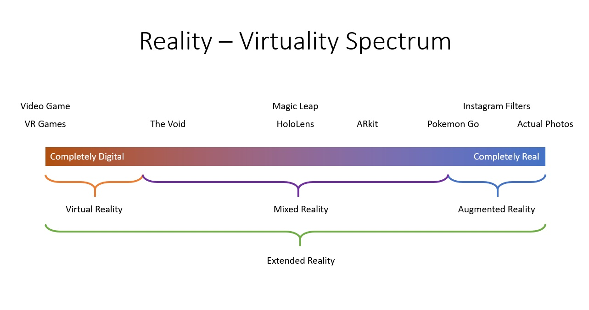
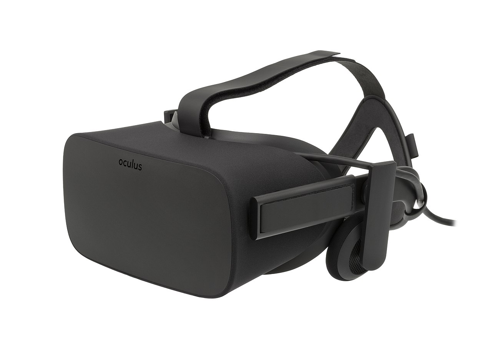
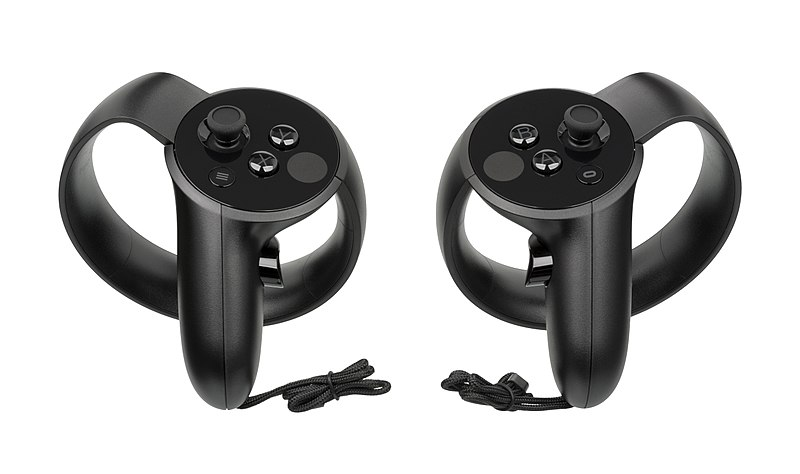
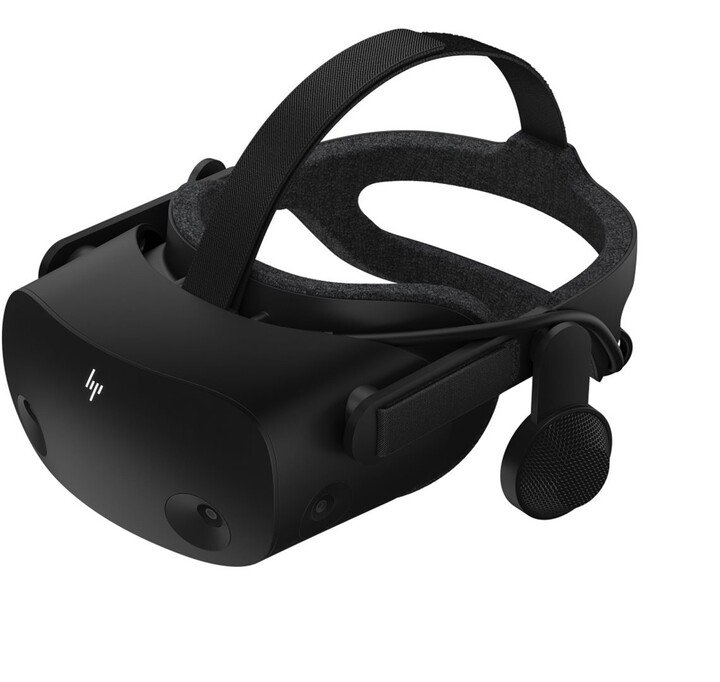
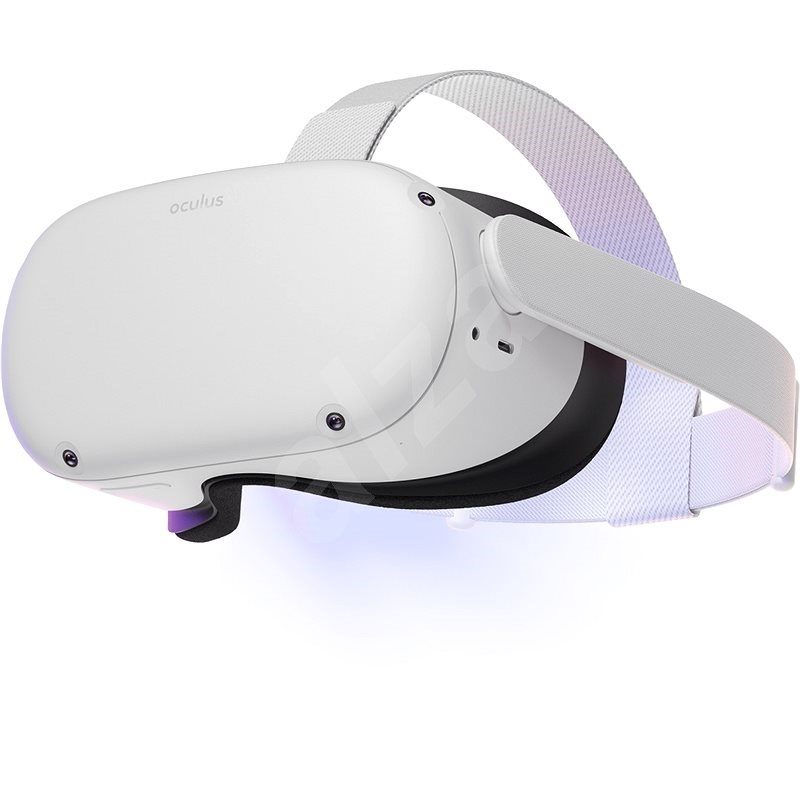

Pojmy a historie VR
Evoluce virtuální, rozšířené a smíšené reality — od počátků stereoskopie po spatial computing.
Základní pojmy: Virtuální realita (VR)
Základní pojmy: AR a MR
Spektrum AR, VR, MR & Spatial Computing
Reálné prostředí a čistě virtuální prostředí představují dva krajní body — mezi nimi leží spojité kontinuum:

Moderní koncept: Spatial Computing (Prostorové počítače)
Pojem zpopularizovaný společnostmi Apple a Meta: přechod od tradičních 2D monitorů k prostorovému uživatelskému rozhraní, kde jsou okna, aplikace a 3D objekty přirozeně ukotveny přímo ve fyzickém prostoru kolem uživatele.
První pokusy o 3D obraz (1838)
Kinetoskop (1889)
První flight simulátor: Link Trainer (1929)
Sensorama (1962)
Telesphere Mask (1960)
Headsight (1961)
Sword of Damocles - Damoklův meč (1968)
Termín Virtuální realita (1987)
Sega VR glasses
CAVE
Nintendo VirtualBoy (1995)
VR v roce 1995
2. Vlna VR: Oculus Rift
2014 a dál: Expanze ekosystému
Dostupné VR v roce 2016
Současná zařízení
PC: HTC Vive (2016)
PC: HTC Vive Pro 1, 2 (2019/21)
PC: Vive Cosmos (Elite) 2019
- Nejnovější řada Vive (říjen 2019):
Přechod na optické sledování bez nutnosti externích majáků.
- Inside-out tracking:
6 kamer na headsetu pro sledování okolního prostoru a ovladačů.
- Displej:
1440×1700 pixelů na oko, 90 Hz obnovovací frekvence, RGB LCD panel.
- Verze Elite:
Výměnný přední kryt (Faceplate) s podporou trackování pomocí bázových stanic (SteamVR Lighthouse).


PC: Oculus Rift (CV1)
- Headset:
1080×1200 na oko, 90 Hz, PenTile OLED panely, integrovaná audio sluchátka.
- Constellation senzor:
Externí infračervené kamery snímající neviditelné IR diody na headsetu a ovladačích.
Velmi nízká latence a vysoká přesnost. - Ovladače:
Původně dodáván s Xbox One gamepadem.
Následně nahrazen průlomovými ergonomickými ovladači Oculus Touch s kapacitními senzory prstů.



PC: Oculus Rift S
PC: Valve Index
- High-end Headset:
Špičková optika s nastavitelným reliéfem očí a fyzickým IPD posuvem.
Obnovovací frekvence 120 Hz s experimentálním režimem 144 Hz. - Ovladače „Knuckles“ (Index Controllers):
87 optických, kapacitních a tlakových senzorů pro sledování jednotlivých prstů.
Možnost zcela otevřít ruku a přirozeně házet předměty. - Base station 2.0 (SteamVR):
Laserové majáky s polem záběru 160°×115° a frekvencí 100 Hz.
- Off-ear BMR reproduktory:
Pohlcující prostorový zvuk bez přímého tlaku na uši.

PC: HP Reverb G2
- Headset:
Špičkový LCD panel 2160×2160 na oko (celkem 4320×2160), 90 Hz, 114° FOV.
Optika a off-ear reproduktory vyvinuté ve spolupráci s Valve. - Inside-Out tracking:
4 kamery pro sledování rotace a polohy bez externích bázových stanic.
- Platformní podpora & Stav:
Nativní Windows Mixed Reality (WMR) + SteamVR.
Microsoft WMR oficiálně ukončil ve Windows 11 - Ovladače:
Trackování pohybu pomocí kamer, napájení 4× AA bateriemi.


Konzole: PS VR (PlayStation VR)
Konzole: PlayStation VR 2 (PS5)
Samostatné: Oculus / Meta Quest 1 & 2
Oculus Quest (2019)
- Přelom za $399 s plnohodnotným 6 DoF pohybem těla i rukou
- Nepotřebuje PC ani konzoli (zcela bez kabelů)
- Chipset: Qualcomm Snapdragon 835
- Displej: 1440×1600 / oko, 72 Hz, PenTile OLED
- Hmotnost: 571 g • Výdrž na baterie: 2–3 hodiny
Meta Quest 2 (2020)
- Chipset: Qualcomm Snapdragon XR2 (výrazně vyšší výkon)
- Displej: 1832×1920 na oko, 90–120 Hz, Fast-switch LCD
- Hmotnost: 503 g
- Podpora Oculus Link / Air Link pro PC VR
- Prodejní hit: Přes 20 milionů prodaných kusů celosvětově


Současnost: Spatial Computing & Apple Vision Pro
Technologie a form-faktor v roce 2026
Trh prostorových a nositelných technologií se v roce 2026 definitivně rozštěpil do dvou klíčových kategorií:
Klíčové technologie moderního VR/MR
Trh a adopce VR/AR v roce 2026
Tržní podíly výrobců headsetů
Globální podíly výrobců dedikovaných VR/MR headsetů a nositelných brýlí v letech 2025/2026:
| Výrobce / Platforma | Tržní podíl (kusy) | Klíčový model (2026) | Cílová skupina & Zaměření |
|---|---|---|---|
| Meta | 74,6 % – 80 % (až 84 % v Q4) |
Meta Quest 3 / 3S (Quest 3S má 34 % trhu) |
Masový trh, herní ekosystém, sociální VR, cenově dostupné B2B. |
| Sony | ~5 % – 8 % | PlayStation VR2 (> 3,4 mil. prodaných kusů) |
Konzolový gaming (PS5), prémiové AAA tituly, OLED HDR displeje. |
| Apple | ~1 % – 2 % (vysoký podíl na příjmech) |
Apple Vision Pro (připravovaný čip M5) |
Ultra-prémiový segment, prosumeři, enterprise, Spatial Computing. |
| Chytré AR brýle (XREAL, RayNeo, Viture, Ray-Ban Meta) |
Dynamický růst (+62 % YoY, > 20 mil. ks) |
XREAL Air 2, Ray-Ban Meta | Celodenní nošení, mobilní produktivita, multimédia, AI asistenti. |
Konsolidace trhu: Meta si drží téměř monopolní postavení v objemu prodaných kusů díky agresivní cenové strategii (Quest 3S za $299). Apple naopak dominuje technologické prestiži a enterprise monetizaci.